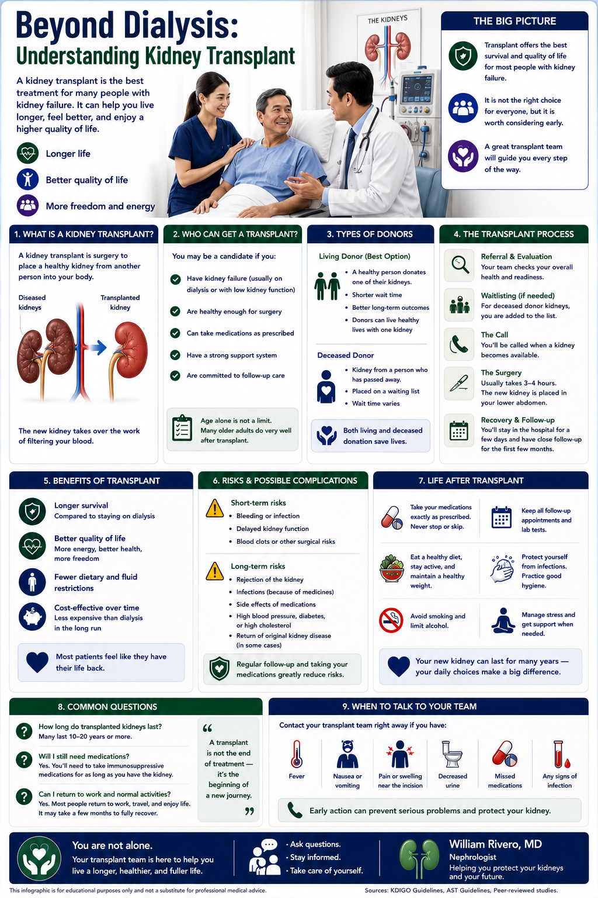
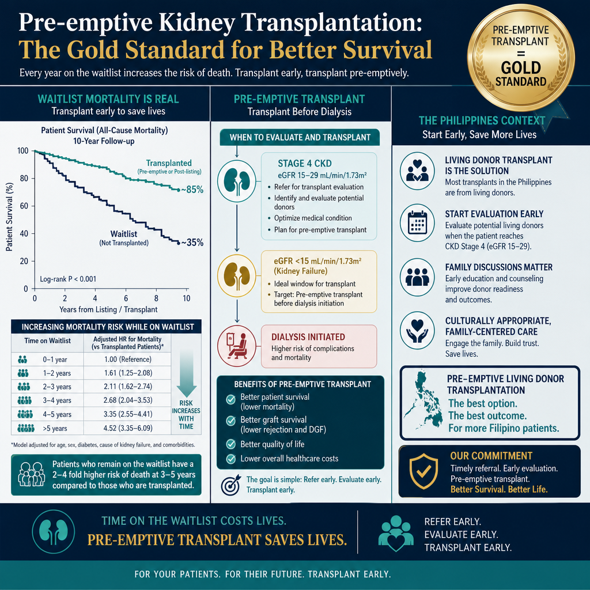
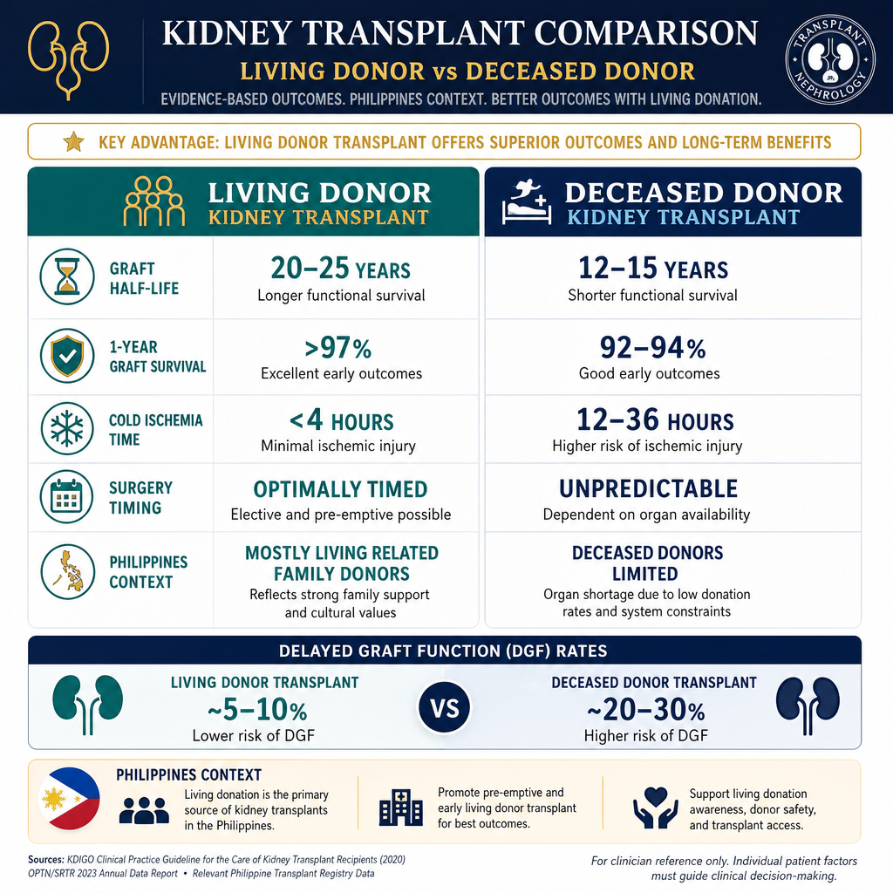
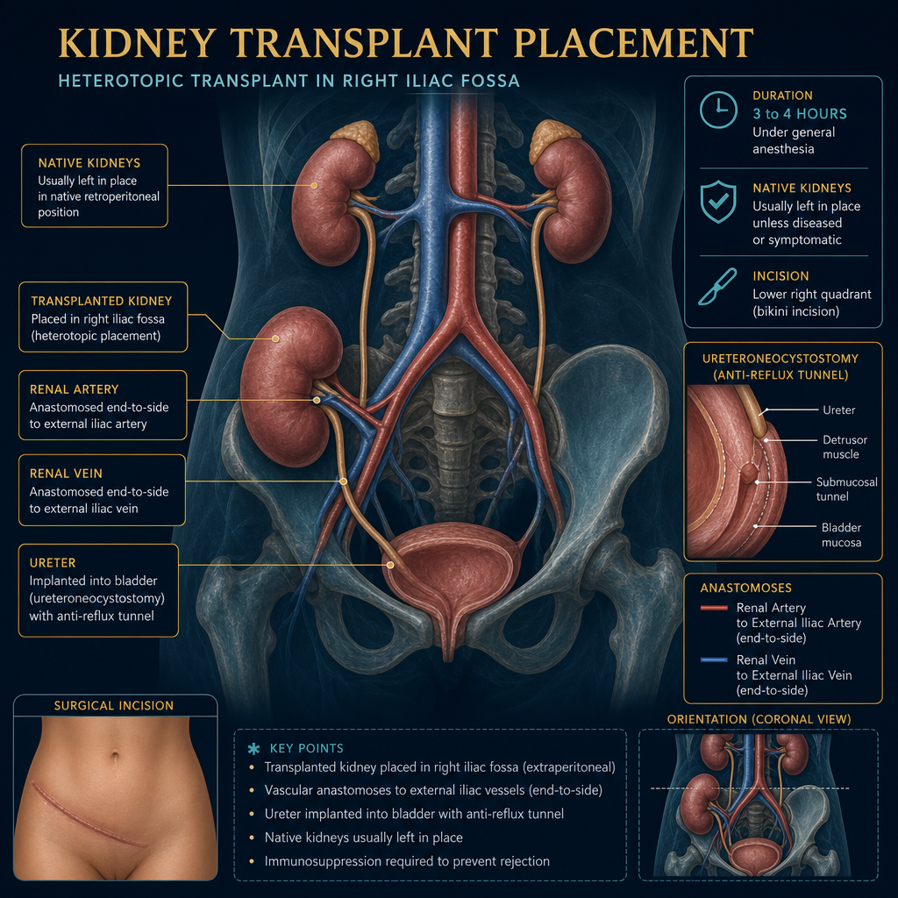
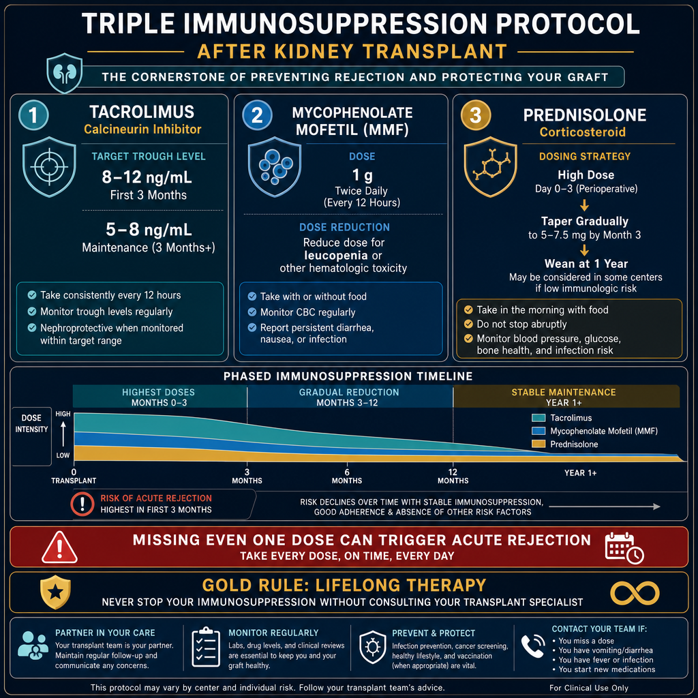
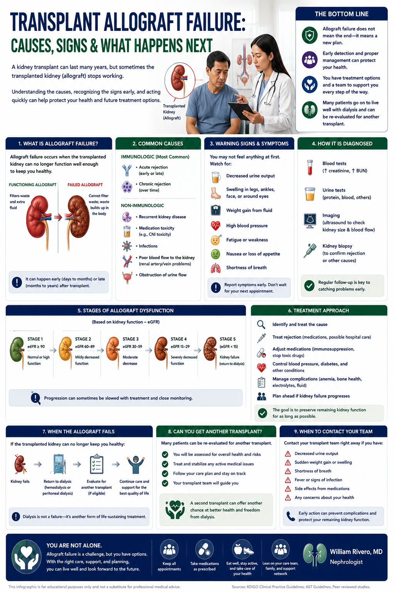

Why Kidney Transplant is Superior to DialysisBakit ang Kidney Transplant ay Mas Mahusay kaysa sa DialysisNgano nga ang Kidney Transplant Mas Maayo kay sa Dialysis Bakit ing Kidney Transplant ya Mas Mahusay kaysa king Dialysis

Kidney transplantation is the gold standard treatment for end-stage kidney disease. A successful transplant restores near-normal kidney function, eliminates the need for dialysis, and provides a quality and duration of life that dialysis — for all its life-saving benefit — simply cannot match. A well-functioning transplant is the closest thing to a second chance at a normal life.Ang kidney transplantation ay ang gold standard na paggamot para sa end-stage kidney disease. Ang matagumpay na transplant ay nagpapanumbalik ng halos normal na function ng bato, inaalis ang pangangailangan para sa dialysis, at nagbibigay ng kalidad at tagal ng buhay na hindi kayang itugma ng dialysis — sa lahat ng benepisyo nitong nagliligtas ng buhay. Ang maayos na gumaganang transplant ang pinakamalapit sa pangalawang pagkakataon sa normal na buhay.Ang kidney transplantation mao ang gold standard nga pagtambal alang sa end-stage kidney disease. Ang matagumpay nga transplant nagpanumbalik sa halos normal nga function sa kidney, nagwagtang sa panginahanglan alang sa dialysis, ug naghatag og kalidad ug tagal sa kinabuhi nga dili mapares sa dialysis — sa tanan niini nga benepisyo sa pagluwas sa kinabuhi. Ang maayo nga nagtrabaho nga transplant ang labing duol sa ikaduhang higayon sa normal nga kinabuhi. Ing kidney transplantation ya ing gold standard a paggamut para king end-stage kidney disease. Ing matagumpay a transplant ya nagpapanumbalik ning halos normal a function ning batu, inaalis ing pangangailangan para king dialysis, at nagbibigay ning kalidad at tagal ning biye a ali kayang itugma ning dialysis — king amin ning benepisyo nitong nagliligtas ning biye. Ing maayos a gumaganang transplant ing pinakamalapit king pangalawang pagkakabanua king normal a biye.

For every year on the transplant waitlist, mortality risk increases. Pre-emptive transplantation (before dialysis starts) provides the best long-term outcomes — this is why evaluation should begin at Stage 4.
50–70% lower mortality50–70% na mas mababang mortalidad50–70% nga mas ubos nga mortalidad 50–70% a mas mababang mortalidad
Compared to matched dialysis patients, transplant recipients have dramatically better survival — even accounting for the surgical risk. This benefit begins within the first year after transplant and increases with time.Kung ikukumpara sa mga katumbas na pasyenteng nasa dialysis, ang mga tumatanggap ng transplant ay may dramatikong mas magandang survival — kahit isasaalang-alang ang surgical risk. Ang benepisyong ito ay nagsisimula sa loob ng unang taon pagkatapos ng transplant at tumataas habang lumilipas ang panahon.Kung itandi sa mga katumbas nga pasyente sa dialysis, ang mga nakadawat sa transplant adunay dramatikong mas maayong survival — bisan ikonsidera ang surgical risk. Ang benepisyo nga kini nagsugod sulod sa unang tuig human sa transplant ug nagdugang habang moabut ang panahon. Nung ikukumpara king deng katumbas a pasyenteng nasa dialysis, ing deng tumatanggap ning transplant ya atin dramatikong mas magandang survival — kahit isasaalang-alang ing surgical risk. Ing benepisyong ini ya nagsisimula king loob ning unang banua kapabanuan ning transplant at tumataas habang lumilipas ing panahon.
Freedom from dialysisKalayaan mula sa dialysisKagawasan gikan sa dialysis Kalayaan mula king dialysis
No more three-times-weekly sessions, dietary restrictions, fluid limits, access complications, or dialysis-related fatigue. Most recipients resume work, exercise, travel, and normal family life within weeks to months of transplant.Wala nang tatlong beses sa isang linggo na mga session, mga paghihigpit sa pagkain, limitasyon sa likido, mga komplikasyon sa access, o pagod na nauugnay sa dialysis. Karamihan sa mga tumatanggap ay nagbabalik sa trabaho, ehersisyo, paglalakbay, at normal na buhay-pamilya sa loob ng ilang linggo hanggang buwan pagkatapos ng transplant.Wala nay tulo ka beses matag semana nga mga session, mga pagdili sa pagkaon, limitasyon sa likido, mga komplikasyon sa access, o kakapoy nga may kalabotan sa dialysis. Kadaghanan sa mga nakadawat mobalik sa trabaho, ehersisyo, pagbiyahe, ug normal nga kinabuhi sa pamilya sulod sa pipila ka semana hangtod buwan human sa transplant. Ala nang tatlong beses king metung a lutu a deng session, deng paghihigpit king pamangan, limitasyon king likido, deng komplikasyon king access, o pagod a nauugnay king dialysis. Kadaklan king deng tumatanggap ya nagbabalik king obran, ehersisyo, paglalakbay, at normal a biye-pamilya king loob ning ilang lutu anggang bulan kapabanuan ning transplant.
Cardiovascular benefitBenepisyo sa cardiovascularBenepisyo sa cardiovascular Benepisyo king cardiovascular
Transplant corrects anemia of CKD, normalizes blood pressure, reverses LV hypertrophy, reduces inflammatory burden, and eliminates the high-cardiovascular-risk state of dialysis. Cardiovascular mortality falls dramatically after a successful transplant.Ang transplant ay nagwawasto ng anemia ng CKD, nagno-normalize ng blood pressure, binabaligtad ang LV hypertrophy, binabawasan ang inflammatory burden, at inaalis ang mataas na cardiovascular risk na estado ng dialysis. Ang cardiovascular mortality ay dramatikong bumababa pagkatapos ng matagumpay na transplant.Ang transplant nagkorihir sa anemia sa CKD, nagno-normalize sa blood pressure, nagbabaligtad sa LV hypertrophy, nagpaubos sa inflammatory burden, ug nagwagtang sa taas nga cardiovascular risk nga estado sa dialysis. Ang cardiovascular mortality dramatikong mohulog human sa matagumpay nga transplant. Ing transplant ya nagwawasto ning anemia ning CKD, nagno-normalize ning blood pressure, binabaligtad ing LV hypertrophy, binabawasan ing inflammatory burden, at inaalis ing matas a cardiovascular risk a estado ning dialysis. Ing cardiovascular mortality ya dramatikong bumababa kapabanuan ning matagumpay a transplant.
Living vs Deceased Donor TransplantTransplant mula sa Buhay vs Namatay na DonorTransplant gikan sa Buhi vs Patay nga Donor Transplant mula king Biye vs Namatay a Donor

Living donor transplants have better outcomes because the kidney is healthier, cold ischemia time is shorter, and surgery can be optimally timed. In the Philippines, most transplants are from living related donors (family members).
Living donor — who can donate?Buhay na donor — sino ang maaaring mag-donate?Buhi nga donor — kinsa ang mahimong mag-donate? Biye a donor — sino ing maaaring mag-donate?
Any healthy adult with two normal kidneys, good general health, normal blood pressure, no diabetes, no proteinuria, and compatible blood type. The donor undergoes thorough medical and psychological evaluation. Donors live normal lives with one kidney — their remaining kidney compensates by growing 30–40% in function over time.Sinumang malusog na matanda na may dalawang normal na bato, mabuting pangkalahatang kalusugan, normal na blood pressure, walang diabetes, walang proteinuria, at katugmang uri ng dugo. Ang donor ay sumasailalim sa masusing medikal at sikolohikal na pagsusuri. Ang mga donor ay nabubuhay nang normal na buhay na may isang bato — ang natitirang bato nila ay nagkokompensa sa pamamagitan ng paglaki ng 30–40% sa function sa paglipas ng panahon.Bisan unsang malusog nga hamtong nga adunay duha ka normal nga kidney, maayong kahimsog, normal nga blood pressure, walay diabetes, walay proteinuria, ug katugmang klase sa dugo. Ang donor moagi sa halalum nga medikal ug sikolohikal nga pagsusi. Ang mga donor nabuhi og normal nga kinabuhi nga adunay usa ka kidney — ang nahibilin nila nga kidney nagkompensa pinaagi sa pagtubo og 30–40% sa function sa paglabay sa panahon. Sinumang malusog a matanda a atin dalawang normal a batu, mabuting pangkalahatang kalusugan, normal a blood pressure, alang diabetes, alang proteinuria, at katugmang uri ning daya. Ing donor ya sumasailalim king masusing medikal at sikolohikal a pagsusuri. Ing deng donor ya nabubuhay nang normal a biye a atin metung a batu — ing natitirang batu nila ya nagkokompensa king pamamagitan ning paglaki ning 30–40% king function king paglipas ning panahon.
Paired kidney exchangePaired kidney exchangePaired kidney exchange Paired kidney exchange
If a willing donor is incompatible with the intended recipient, paired exchange programs match them with another incompatible donor-recipient pair to swap kidneys — allowing both recipients to receive a compatible organ. This is available at major transplant centers in the Philippines.Kung ang isang handang donor ay hindi katugma sa nilalayon na tatanggap, ang mga paired exchange program ay nagtatugma sa kanila sa isa pang hindi katugmang donor-recipient pair para magpalit ng mga bato — na nagpapahintulot sa parehong tatanggap na makatanggap ng katugmang organ. Ito ay makukuha sa mga pangunahing transplant center sa Pilipinas.Kon ang usa ka buot nga donor dili katugma sa giduhaduha nga nakadawat, ang mga paired exchange program nagpares kanila sa laing dili katugma nga donor-recipient pair aron magbayloay og mga kidney — nagpahintulot sa duha ka nakadawat nga makadawat og katugma nga organ. Kini anaa sa mga pangunahing transplant center sa Pilipinas. Nung ing metung a handang donor ya ali katugma king nilalayon a tatanggap, ing deng paired exchange program ya nagtatugma king kanila king metung pang ali katugmang donor-recipient pair para magpalit ning deng batu — a nagpapahintulot king parehong tatanggap a makatanggap ning katugmang organ. Ini ya makukuha king deng pangunahing transplant center king Pilipinas.
What Happens During Kidney Transplant SurgeryAno ang Nangyayari Sa Panahon ng Kidney Transplant SurgeryUnsa ang Mahitabo Sa Panahon sa Kidney Transplant Surgery Ano ing Nangyayari King Panahon ning Kidney Transplant Surgery

The transplant kidney is placed in the pelvis (not where the native kidneys are). The renal artery and vein are connected to the iliac vessels, and the ureter is implanted into the bladder. Surgery takes 3–4 hours under general anesthesia.
Immediate function vs delayed graft functionAgarang function vs delayed graft functionDiretso nga function vs delayed graft function Agarang function vs delayed graft function
A living donor kidney often produces urine on the operating table — an exciting moment. A deceased donor kidney may take days to weeks to "wake up" (delayed graft function) due to ischemia — requiring temporary dialysis. This does not mean the transplant failed — it usually recovers fully.Ang bato mula sa buhay na donor ay madalas na gumagawa ng ihi sa operating table — isang kapana-panabik na sandali. Ang bato mula sa namatay na donor ay maaaring tumagal ng mga araw hanggang linggo bago "gumising" (delayed graft function) dahil sa ischemia — na nangangailangan ng pansamantalang dialysis. Hindi ito nangangahulugang nabigo ang transplant — karaniwang ganap itong gumagaling.Ang kidney gikan sa buhi nga donor sagad nagprodyus og ihi sa operating table — usa ka kapahangawa nga sandali. Ang kidney gikan sa patay nga donor mahimong mokabat og mga adlaw hangtod semana aron "mohigmata" (delayed graft function) tungod sa ischemia — nanginahanglan og temporaryong dialysis. Dili kini nagpasabot nga napalpak ang transplant — kasagaran hingpit kini nga naayo. Ing batu mula king biye a donor ya madalas a gumagawa ning ihi king operating table — metung a kapana-panabik a sandali. Ing batu mula king namatay a donor ya maaaring tumagal ning deng aldo anggang lutu bago "gumising" (delayed graft function) dahil king ischemia — a nangangailangan ning pansamantalang dialysis. Ali ini nangangahulugang nabigo ing transplant — karaniwang ganap itong gumagaling.
Hospital stay and recoveryPananatili sa ospital at pagbawiPanagtugon sa ospital ug pagkaayo Pananatili king ospital at pagbawi
Most recipients are hospitalized 5–7 days. Urine output, creatinine, blood pressure, and immunosuppression levels are monitored closely. First creatinine check occurs 1–2 hours post-operatively. Full recovery and return to work typically takes 4–8 weeks.Karamihan sa mga tatanggap ay na-ospital ng 5–7 araw. Ang output ng ihi, creatinine, blood pressure, at mga antas ng immunosuppression ay masusing sinusubaybayan. Ang unang pagsusuri ng creatinine ay nagaganap 1–2 oras pagkatapos ng operasyon. Ang ganap na pagbawi at pagbabalik sa trabaho ay karaniwang tumatagal ng 4–8 linggo.Kadaghanan sa mga nakadawat gihospital og 5–7 ka adlaw. Ang output sa ihi, creatinine, blood pressure, ug mga antas sa immunosuppression masegurong gibantayan. Ang unang pagsusi sa creatinine nagaganap 1–2 ka oras human sa operasyon. Ang hingpit nga pagkaayo ug pagbalik sa trabaho kasagaran mokabat og 4–8 ka semana. Kadaklan king deng tatanggap ya a-ospital ning 5–7 aldo. Ing output ning ihi, creatinine, blood pressure, at deng antas ning immunosuppression ya masusing sinusubaybayan. Ing unang pagsusuri ning creatinine ya nagaganap 1–2 oras kapabanuan ning operasyon. Ing ganap a pagbawi at pagbabalik king obran ya karaniwang tumatagal ning 4–8 lutu.
What Evaluation Is Required Before TransplantAnong Pagsusuri ang Kailangan Bago ang TransplantUnsang Pagsusi ang Gikinahanglan Sa Wala Pa ang Transplant Anong Pagsusuri ing Kailangan Bago ing Transplant
Transplant evaluation is extensive because the surgery carries risk and the subsequent immunosuppression lifelong — the recipient must be medically and psychologically prepared to benefit maximally.Ang pagsusuri para sa transplant ay malawak dahil ang operasyon ay may kasamang panganib at ang kasunod na immunosuppression ay habambuhay — ang tatanggap ay dapat na medikal at sikolohikal na handa upang makinabang nang husto.Ang pagsusi alang sa transplant halapad tungod kay ang operasyon adunay kasamang peligro ug ang mosunod nga immunosuppression hangtod sa kinabuhi — ang nakadawat kinahanglan medikal ug sikolohikal nga andam aron makaganansya og labing dako. Ing pagsusuri para king transplant ya malawak dahil ing operasyon ya atin kasamang panganib at ing kasunod a immunosuppression ya habambuhay — ing tatanggap ya dapat a medikal at sikolohikal a handa upang makinabang nang husto.
Blood group and crossmatch compatibilityKatugmang uri ng dugo at crossmatchKatugmang klase sa dugo ug crossmatch Katugmang uri ning daya at crossmatch
ABO blood group must be compatible (or incompatible transplant protocols available at specialized centers). HLA typing and crossmatch testing determine immunological compatibility — a negative crossmatch is required for standard transplant.Ang ABO blood group ay dapat na katugma (o ang mga incompatible transplant protocol ay makukuha sa mga espesyalisadong sentro). Ang HLA typing at crossmatch testing ay nagtatakda ng immunological compatibility — isang negatibong crossmatch ang kailangan para sa karaniwang transplant.Ang ABO blood group kinahanglan katugma (o ang mga incompatible transplant protocol anaa sa mga espesyalisadong sentro). Ang HLA typing ug crossmatch testing nagtakda sa immunological compatibility — usa ka negatibong crossmatch ang gikinahanglan alang sa naandang transplant. Ing ABO blood group ya dapat a katugma (o ing deng incompatible transplant protocol ya makukuha king deng espesyalisadong sentro). Ing HLA typing at crossmatch testing ya nagtatakda ning immunological compatibility — metung a negatibong crossmatch ing kailangan para king karaniwang transplant.
Cardiac evaluationPagsusuri sa pusoPagsusi sa kasingkasing Pagsusuri king pusu
Dialysis patients have high cardiovascular risk. Echocardiogram, stress test, and coronary angiography (for high-risk patients) ensure the heart can safely withstand surgery and the cardiovascular changes post-transplant. Active coronary artery disease must be treated before listing.Ang mga pasyenteng nasa dialysis ay may mataas na cardiovascular risk. Ang echocardiogram, stress test, at coronary angiography (para sa mga pasyenteng mataas ang panganib) ay tinitiyak na ang puso ay ligtas na makatitiis sa operasyon at sa mga cardiovascular na pagbabago pagkatapos ng transplant. Ang aktibong coronary artery disease ay dapat gamutin bago mag-lista.Ang mga pasyente sa dialysis adunay taas nga cardiovascular risk. Ang echocardiogram, stress test, ug coronary angiography (alang sa mga pasyente nga taas ang peligro) nagsiguro nga ang kasingkasing luwas nga makatugon sa operasyon ug sa mga cardiovascular nga pagbag-o human sa transplant. Ang aktibong coronary artery disease kinahanglan gamuton sa wala pa mag-lista. Ing deng pasyenteng nasa dialysis ya atin matas a cardiovascular risk. Ing echocardiogram, stress test, at coronary angiography (para king deng pasyenteng matas ing panganib) ya tinitiyak a ing pusu ya ligtas a makatitiis king operasyon at king deng cardiovascular a pagbabago kapabanuan ning transplant. Ing aktibong coronary artery disease ya dapat gamutin bago mag-lista.
Infection screeningScreening para sa impeksyonScreening alang sa impeksyon Screening para king impeksyon
TB (PPD/IGRA), Hepatitis B and C, HIV, CMV, EBV, varicella serology. Active infections must be treated before transplant. HBV-positive recipients require antiviral prophylaxis. CMV mismatch (donor+/recipient-) requires valganciclovir prophylaxis post-transplant.TB (PPD/IGRA), Hepatitis B at C, HIV, CMV, EBV, varicella serology. Ang mga aktibong impeksyon ay dapat gamutin bago ang transplant. Ang mga tatanggap na positibo sa HBV ay nangangailangan ng antiviral prophylaxis. Ang CMV mismatch (donor+/recipient-) ay nangangailangan ng valganciclovir prophylaxis pagkatapos ng transplant.TB (PPD/IGRA), Hepatitis B ug C, HIV, CMV, EBV, varicella serology. Ang mga aktibong impeksyon kinahanglan gamuton sa wala pa ang transplant. Ang mga nakadawat nga positibo sa HBV nanginahanglan og antiviral prophylaxis. Ang CMV mismatch (donor+/recipient-) nanginahanglan og valganciclovir prophylaxis human sa transplant. TB (PPD/IGRA), Hepatitis B at C, HIV, CMV, EBV, varicella serology. Ing deng aktibong impeksyon ya dapat gamutin bago ing transplant. Ing deng tatanggap a positibo king HBV ya nangangailangan ning antiviral prophylaxis. Ing CMV mismatch (donor+/recipient-) ya nangangailangan ning valganciclovir prophylaxis kapabanuan ning transplant.
Malignancy screeningScreening para sa kanserScreening alang sa kanser Screening para king kanser
Pap smear, mammogram, colonoscopy, PSA, chest imaging, and ultrasound for cancer. Active malignancy is a contraindication. Prior cancers require a waiting period (typically 2–5 years in remission depending on cancer type) before transplant listing.Pap smear, mammogram, colonoscopy, PSA, chest imaging, at ultrasound para sa kanser. Ang aktibong malignancy ay isang kontraindikasyon. Ang mga nakaraang kanser ay nangangailangan ng panahon ng paghihintay (karaniwang 2–5 taon sa remission depende sa uri ng kanser) bago ang transplant listing.Pap smear, mammogram, colonoscopy, PSA, chest imaging, ug ultrasound alang sa kanser. Ang aktibong malignancy usa ka kontraindikasyon. Ang mga nakaaging kanser nanginahanglan og panahon sa paghulat (kasagaran 2–5 ka tuig sa remission depende sa klase sa kanser) sa wala pa ang transplant listing. Pap smear, mammogram, colonoscopy, PSA, chest imaging, at ultrasound para king kanser. Ing aktibong malignancy ya metung a kontraindikasyon. Ing deng nakaraang kanser ya nangangailangan ning panahon ning paghihintay (karaniwang 2–5 banua king remission depende king uri ning kanser) bago ing transplant listing.
Vaccinations — complete before transplantMga bakuna — kumpletuhin bago ang transplantMga bakuna — kumpleto sa wala pa ang transplant Deng bakuna — kumpletuhin bago ing transplant
Once immunosuppressed, live vaccines cannot be given. Complete: Hepatitis B (double dose 40 mcg × 3), Pneumococcal (PCV13 then PPSV23), Influenza (annual), Varicella (if seronegative), HPV (if age-appropriate), COVID-19. Do this during evaluation — not after listing.Kapag na-immunosuppressed na, hindi na maaaring ibigay ang mga live vaccine. Kumpletuhin: Hepatitis B (dobleng dosis 40 mcg × 3), Pneumococcal (PCV13 pagkatapos PPSV23), Influenza (taunan), Varicella (kung seronegative), HPV (kung angkop sa edad), COVID-19. Gawin ito sa panahon ng pagsusuri — hindi pagkatapos mag-lista.Kon na-immunosuppressed na, ang mga live vaccine dili na mahatag. Kumpleto: Hepatitis B (dobleng dosis 40 mcg × 3), Pneumococcal (PCV13 dayon PPSV23), Influenza (tinuig), Varicella (kon seronegative), HPV (kon angay sa edad), COVID-19. Buhata kini sa panahon sa pagsusi — dili human mag-lista. Nung a-immunosuppressed a, ali a maaaring ibigay ing deng live vaccine. Kumpletuhin: Hepatitis B (dobleng dosis 40 mcg × 3), Pneumococcal (PCV13 kapabanuan PPSV23), Influenza (taunan), Varicella (nung seronegative), HPV (nung angkop king edad), COVID-19. Gawin ini king panahon ning pagsusuri — ali kapabanuan mag-lista.
Immunosuppression — Why You Must Take It for LifeImmunosuppression — Bakit Kailangan Itong Inumin HabambuhayImmunosuppression — Ngano nga Kinahanglan Kining Inumon sa Tibuok Kinabuhi Immunosuppression — Bakit Kailangan Itong Inumin Habambuhay
Your immune system will recognize the donor kidney as foreign and try to destroy it — this is rejection. Immunosuppressive medications suppress this response and keep the kidney alive and functioning. These medications are the price of having a working kidney — they are non-negotiable and taken every single day, for the rest of your life.Ang inyong immune system ay makikilala ang donor kidney bilang banyaga at susubukang sirain ito — ito ang rejection. Ang mga immunosuppressive na gamot ay pinipigilan ang tugong ito at pinapanatiling buhay at gumagana ang bato. Ang mga gamot na ito ay ang presyo ng pagkakaroon ng gumaganang bato — hindi ito mapagtatawanan at kinukuha araw-araw, habang kayo ay nabubuhay.Ang imong immune system moila sa donor kidney ingon langyaw ug mosulay nga laglagon kini — mao kini ang rejection. Ang mga immunosuppressive nga tambal nagpugong niini nga tubag ug nagpadayon sa kidney nga buhi ug nagtrabaho. Ang mga tambal nga kini mao ang presyo sa pagkaadunay nagtrabaho nga kidney — dili kini mapagpilian ug giinom matag adlaw, sa tibuok imong kinabuhi. Ing inyu immune system ya makikilala ing donor kidney bilang banyaga at susubukang sirain ini — ini ing rejection. Ing deng immunosuppressive a gamut ya pinipigilan ing tugong ini at pinapanatiling biye at gumagana ing batu. Ing deng gamut a ini ya ing presyo ning pagkakaroon ning gumaganang batu — ali ini mapagtatawanan at kinukuha aldo-aldo, habang kayu ya nabubuhay.

The triple protocol is started before or at transplant and continued lifelong. Doses are highest in the first 3–6 months (highest rejection risk) and gradually reduced. Missing even one dose can trigger rejection.
Never skip your immunosuppression — not even one dayHuwag kailanman laktawan ang inyong immunosuppression — kahit isang araw lamangAyaw gayud preterahan ang imong immunosuppression — bisan usa ka adlaw Eka kailanman laktawan ing inyu immunosuppression — kahit metung a aldo lamang
Missing tacrolimus or mycophenolate for even 1–2 days can trigger acute rejection that may be irreversible. Set phone alarms. Keep medications in a visible place. Carry a 3-day supply when traveling. If you vomit within 1 hour of taking your dose, retake it. If you are hospitalized, bring your medication list and insist the transplant drugs not be stopped without nephrology approval.Ang pagkawala ng tacrolimus o mycophenolate kahit 1–2 araw lamang ay maaaring mag-trigger ng acute rejection na maaaring hindi na mabawi. Itakda ang mga alarm sa telepono. Itago ang mga gamot sa nakikitang lugar. Magdala ng 3-araw na supply kapag naglalakbay. Kung nagsusuka kayo sa loob ng 1 oras pagkatapos inumin ang inyong dosis, inumin muli ito. Kung kayo ay na-ospital, dalhin ang listahan ng inyong gamot at igiit na ang mga transplant drug ay hindi ihihinto nang walang pahintulot ng nephrology.Ang pagkawala sa tacrolimus o mycophenolate bisan 1–2 ka adlaw lang mahimong mag-trigger og acute rejection nga mahimong dili na mabawi. Itakda ang mga alarm sa telepono. Tipigan ang mga tambal sa makita nga dapit. Magdala og 3-ka-adlaw nga suplay kon magbiyahe. Kon mosuka kamo sulod sa 1 ka oras human moinom sa imong dosis, iinom pag-usab. Kon kamo mahospital, dad-a ang imong listahan sa tambal ug iginsistir nga ang mga transplant drug dili ihunong nga walay pagtugot sa nephrology. Ing pagkaala ning tacrolimus o mycophenolate kahit 1–2 aldo lamang ya maaaring mag-trigger ning acute rejection a maaaring ali a mabawi. Itakda ing deng alarm king telepono. Itago ing deng gamut king nakikitang lugar. Magdala ning 3-aldo a supply nung naglalakbay. Nung nagsusuka kayu king loob ning 1 oras kapabanuan inumin ing inyu dosis, inumin muli ini. Nung kayu ya a-ospital, dalhin ing listahan ning inyu gamut at igiit a ing deng transplant drug ya ali ihihinto nang alang pahintulot ning nephrology.
Understanding RejectionPag-unawa sa RejectionPagsabut sa Rejection Pag-unawa king Rejection

Acute rejectionAcute rejectionAcute rejection Acute rejection
Occurs days to months after transplant. T-cells recognize the foreign kidney and attack it. Presents as rising creatinine, reduced urine output, and sometimes fever and graft tenderness. Treated with high-dose steroids (pulse methylprednisolone) or anti-T-cell therapy (thymoglobulin). Reversal rate ~90% if caught early.Nagaganap na mga araw hanggang buwan pagkatapos ng transplant. Kinikilala ng mga T-cell ang banyagang bato at inaatake ito. Nagpapakita bilang tumataas na creatinine, nabawasang output ng ihi, at minsan lagnat at pagiging masakit ng graft. Ginagamot ng high-dose steroids (pulse methylprednisolone) o anti-T-cell therapy (thymoglobulin). Rate ng pagbabaligtad ~90% kung nahuli nang maaga.Nagaganap og mga adlaw hangtod buwan human sa transplant. Ang mga T-cell moila sa langyaw nga kidney ug moatake niini. Nagpakita ingon nga pagtaas sa creatinine, pagkunhod sa output sa ihi, ug usahay hilanat ug kasakit sa graft. Ginatagbal og high-dose steroids (pulse methylprednisolone) o anti-T-cell therapy (thymoglobulin). Rate sa pagbalhin ~90% kon nahuli sayo. Nagaganap a deng aldo anggang bulan kapabanuan ning transplant. Kinikilala ning deng T-cell ing banyagang batu at inaatake ini. Nagpapakita bilang tumataas a creatinine, nabawasang output ning ihi, at misan lagnat at pagiging masakit ning graft. Ginagamot ning high-dose steroids (pulse methylprednisolone) o anti-T-cell therapy (thymoglobulin). Rate ning pagbabaligtad ~90% nung nahuli nang maaga.
Antibody-mediated rejection (AMR)Antibody-mediated rejection (AMR)Antibody-mediated rejection (AMR) Antibody-mediated rejection (AMR)
Antibodies against donor HLA attack the kidney microvasculature. More difficult to treat than T-cell rejection. Requires plasmapheresis, IVIg, and rituximab. AMR is the leading cause of late graft loss — prevention through HLA matching and DSA monitoring is critical.Ang mga antibody laban sa donor HLA ay inaatake ang kidney microvasculature. Mas mahirap gamutin kaysa sa T-cell rejection. Nangangailangan ng plasmapheresis, IVIg, at rituximab. Ang AMR ang pangunahing sanhi ng late graft loss — ang pag-iwas sa pamamagitan ng HLA matching at DSA monitoring ay kritikal.Ang mga antibody batok sa donor HLA moatake sa kidney microvasculature. Mas lisod tagbalon kay sa T-cell rejection. Nanginahanglan og plasmapheresis, IVIg, ug rituximab. Ang AMR mao ang pangunahing hinungdan sa late graft loss — ang paglikay pinaagi sa HLA matching ug DSA monitoring kritikal. Ing deng antibody laban king donor HLA ya inaatake ing kidney microvasculature. Mas mahirap gamutin kaysa king T-cell rejection. Nangangailangan ning plasmapheresis, IVIg, at rituximab. Ing AMR ing pangunahing sanhi ning late graft loss — ing pag-iwas king pamamagitan ning HLA matching at DSA monitoring ya kritikal.
Chronic allograft nephropathyChronic allograft nephropathyChronic allograft nephropathy Chronic allograft nephropathy
Slow, progressive fibrosis and tubular atrophy over years — from subclinical rejection, nephrotoxicity (calcineurin inhibitors), recurrence of original disease, and hypertension. Manifests as slowly rising creatinine and proteinuria. The main cause of late graft loss beyond 5 years.Mabagal, progresibong fibrosis at tubular atrophy sa loob ng mga taon — mula sa subclinical rejection, nephrotoxicity (calcineurin inhibitors), pagbabalik ng orihinal na sakit, at hypertension. Nagpapakita bilang dahan-dahang tumataas na creatinine at proteinuria. Ang pangunahing sanhi ng late graft loss na higit sa 5 taon.Hinay, progresibong fibrosis ug tubular atrophy sa sulod sa mga tuig — gikan sa subclinical rejection, nephrotoxicity (calcineurin inhibitors), pagbalik sa orihinal nga sakit, ug hypertension. Nagpakita ingon nga hinay-hinay nga pagtaas sa creatinine ug proteinuria. Ang pangunahing hinungdan sa late graft loss nga labaw sa 5 ka tuig. Mabagal, progresibong fibrosis at tubular atrophy king loob ning deng banua — mula king subclinical rejection, nephrotoxicity (calcineurin inhibitors), pagbabalik ning orihinal a sakit, at hypertension. Nagpapakita bilang dahan-dahang tumataas a creatinine at proteinuria. Ing pangunahing sanhi ning late graft loss a higit king 5 banua.
When to call your transplant team immediatelyKailan agad tawagan ang inyong transplant teamKon kanus-a dayon tawagan ang imong transplant team Kailan agad tawagan ing inyu transplant team
- Rising creatinine above your personal baseline by more than 20–30%Tumataas na creatinine na higit sa 20–30% kaysa sa inyong personal na baselinePagtaas sa creatinine nga labaw sa 20–30% gikan sa imong personal nga baseline Tumataas a creatinine a higit king 20–30% kaysa king inyu personal a baseline
- New reduction in urine outputBagong pagbaba sa output ng ihiBag-ong pagkunhod sa output sa ihi Bagong pagbaba king output ning ihi
- Fever above 38°C — could be rejection or serious infectionLagnat na higit sa 38°C — maaaring rejection o seryosong impeksyonHilanat nga labaw sa 38°C — mahimong rejection o seryosong impeksyon Lagnat a higit king 38°C — maaaring rejection o seryosong impeksyon
- Pain or swelling over the transplant site (lower right abdomen)Sakit o pamamaga sa lugar ng transplant (ibabang kanang tiyan)Sakit o pamaga sa dapit sa transplant (ubos nga tuo nga tiyan) Sakit o pamamaga king lugar ning transplant (ibabang kanang tiyan)
- Foamy urine (new proteinuria — possible rejection or recurrence)Mabuburang ihi (bagong proteinuria — posibleng rejection o pagbabalik)Bula nga ihi (bag-ong proteinuria — posibleng rejection o pagbalik) Mabuburang ihi (bagong proteinuria — posibleng rejection o pagbabalik)
- Any medication missed for more than 24 hoursAnumang gamot na nalaktawan nang higit sa 24 na orasBisan unsang tambal nga napreteran og labaw sa 24 ka oras Anumang gamut a nalaktawan nang higit king 24 a oras
Lifelong Monitoring and CareHabambuhay na Pagsubaybay at Pag-aalagaPagbantay ug Pag-atiman sa Tibuok Kinabuhi Habambuhay a Pagsubaybay at Pag-aalaga
Post-Transplant Follow-Up ScheduleIskedyul ng Follow-Up Pagkatapos ng TransplantIskedyul sa Follow-Up Human sa Transplant Iskedyul ning Follow-Up Kapabanuan ning Transplant
Daily then 2–3× weekly clinic visitsAraw-araw pagkatapos 2–3× linggu-linggo na pagbisita sa klinikaAdlaw-adlaw dayon 2–3× matag semana nga pagbisita sa klinika Aldo-aldo kapabanuan 2–3× linggu-lutu a pagbisita king klinika
Tacrolimus levels, creatinine, CBC, electrolytes, BP daily. Wound check, urine output, first urine culture. Any fever or rising creatinine investigated urgently.Araw-araw na antas ng tacrolimus, creatinine, CBC, electrolytes, BP. Pagsusuri ng sugat, output ng ihi, unang urine culture. Anumang lagnat o tumataas na creatinine ay agad sinisiyasat.Adlaw-adlaw nga antas sa tacrolimus, creatinine, CBC, electrolytes, BP. Pagsusi sa sugat, output sa ihi, unang urine culture. Bisan unsang hilanat o pagtaas sa creatinine dayon gisusi. Aldo-aldo a antas ning tacrolimus, creatinine, CBC, electrolytes, BP. Pagsusuri ning sugat, output ning ihi, unang urine culture. Anumang lagnat o tumataas a creatinine ya agad sinisiyasat.
Weekly then biweekly visitsLingguhang pagkatapos bilinguhang pagbisitaMatag semana dayon matag duha ka semana nga pagbisita Lingguhang kapabanuan bilinguhang pagbisita
Tacrolimus level targeting 8–12 ng/mL. CMV and BK virus monitoring begins. Immunosuppression dose reduction begins. Discharge from transplant center to follow-up nephrology clinic.Antas ng tacrolimus na target 8–12 ng/mL. Nagsisimula ang pagsubaybay sa CMV at BK virus. Nagsisimula ang pagbabawas ng dosis ng immunosuppression. Discharge mula sa transplant center papunta sa follow-up nephrology clinic.Antas sa tacrolimus nga target 8–12 ng/mL. Nagsugod ang pagbantay sa CMV ug BK virus. Nagsugod ang pagkunhod sa dosis sa immunosuppression. Discharge gikan sa transplant center ngadto sa follow-up nephrology clinic. Antas ning tacrolimus a target 8–12 ning/mL. Nagsisimula ing pagsubaybay king CMV at BK virus. Nagsisimula ing pagbabawas ning dosis ning immunosuppression. Discharge mula king transplant center papunta king follow-up nephrology clinic.
Monthly visitsBuwanang pagbisitaMatag bulan nga pagbisita Buwanang pagbisita
Creatinine trend, UACR, tacrolimus level (target 5–8 ng/mL), BK virus (polyomavirus nephropathy screening), CMV, CBC. Screen for post-transplant diabetes, dyslipidemia, skin cancers. Bone density scan.Trend ng creatinine, UACR, antas ng tacrolimus (target 5–8 ng/mL), BK virus (polyomavirus nephropathy screening), CMV, CBC. Screening para sa post-transplant diabetes, dyslipidemia, skin cancers. Bone density scan.Trend sa creatinine, UACR, antas sa tacrolimus (target 5–8 ng/mL), BK virus (polyomavirus nephropathy screening), CMV, CBC. Screening alang sa post-transplant diabetes, dyslipidemia, skin cancers. Bone density scan. Trend ning creatinine, UACR, antas ning tacrolimus (target 5–8 ning/mL), BK virus (polyomavirus nephropathy screening), CMV, CBC. Screening para king post-transplant diabetes, dyslipidemia, skin cancers. Bone density scan.
Every 3–6 months lifelongBawat 3–6 buwan habambuhayMatag 3–6 ka bulan sa tibuok kinabuhi Bawat 3–6 bulan habambuhay
Annual cancer screening (skin, colorectal, cervical, prostate), renal ultrasound, echocardiogram every 2–3 years, bone density. Tacrolimus target 4–6 ng/mL long-term. UACR monitoring for proteinuria as early rejection/recurrence signal.Taunan na cancer screening (balat, colorectal, cervical, prostate), renal ultrasound, echocardiogram tuwing 2–3 taon, bone density. Tacrolimus target 4–6 ng/mL pangmatagalan. UACR monitoring para sa proteinuria bilang maagang signal ng rejection/recurrence.Tinuig nga cancer screening (panit, colorectal, cervical, prostate), renal ultrasound, echocardiogram matag 2–3 ka tuig, bone density. Tacrolimus target 4–6 ng/mL pangmatagalan. UACR monitoring alang sa proteinuria ingon nga sayo nga signal sa rejection/recurrence. Taunan a cancer screening (balat, colorectal, cervical, prostate), renal ultrasound, echocardiogram tuwing 2–3 banua, bone density. Tacrolimus target 4–6 ning/mL pangmatagalan. UACR monitoring para king proteinuria bilang maagang signal ning rejection/recurrence.
| Long-term riskPangmatagalang panganibPangmatagalang peligro Pangmatagalang panganib | Why it occursBakit ito nagaganapNgano nga nagaganap kini Bakit ini nagaganap | Monitoring / PreventionPagsubaybay / Pag-iwasPagbantay / Paglikay Pagsubaybay / Pag-iwas |
|---|---|---|
| Post-transplant diabetes (NODAT)Post-transplant diabetes (NODAT)Post-transplant diabetes (NODAT) Post-transplant diabetes (NODAT) | Tacrolimus + steroids impair insulin secretion and sensitivityAng tacrolimus + steroids ay nagpapahina ng insulin secretion at sensitivityAng tacrolimus + steroids nagpahuyangon sa insulin secretion ug sensitivity Ing tacrolimus + steroids ya nagpapahina ning insulin secretion at sensitivity | FBS and HbA1c every 3 months. Lifestyle modification. Metformin or insulin if needed. Consider switch from tacrolimus to cyclosporine in refractory cases.FBS at HbA1c tuwing 3 buwan. Pagbabago ng lifestyle. Metformin o insulin kung kailangan. Isaalang-alang ang paglipat mula tacrolimus sa cyclosporine sa mga refractory na kaso.FBS ug HbA1c matag 3 ka bulan. Pagbag-o sa lifestyle. Metformin o insulin kon kinahanglan. Hunahunaon ang pagbalhin gikan sa tacrolimus ngadto sa cyclosporine sa mga refractory nga kaso. FBS at HbA1c tuwing 3 bulan. Pagbabago ning lifestyle. Metformin o insulin nung kailangan. Isaalang-alang ing paglipat mula tacrolimus king cyclosporine king deng refractory a kaso. |
| HypertensionMataas na presyon ng dugoTaas nga presyon sa dugo Matas a presyon ning daya | Calcineurin inhibitor vasoconstriction + steroid sodium retentionVasoconstriction ng calcineurin inhibitor + sodium retention ng steroidVasoconstriction sa calcineurin inhibitor + sodium retention sa steroid Vasoconstriction ning calcineurin inhibitor + sodium retention ning steroid | Target <130/80 mmHg. CCB (amlodipine) preferred — minimal drug interaction. Avoid diltiazem/verapamil (raise tacrolimus levels).Target na <130/80 mmHg. CCB (amlodipine) ang mas pinipili — minimal drug interaction. Iwasan ang diltiazem/verapamil (nagpapataas ng antas ng tacrolimus).Target nga <130/80 mmHg. CCB (amlodipine) mas gipalabi — minimal drug interaction. Likayi ang diltiazem/verapamil (nagpataas sa antas sa tacrolimus). Target a <130/80 mmHg. CCB (amlodipine) ing mas pinipili — minimal drug interaction. Iwasan ing diltiazem/verapamil (nagpapataas ning antas ning tacrolimus). |
| DyslipidemiaDyslipidemiaDyslipidemia Dyslipidemia | Steroids + CNI + sirolimus raise LDL and TGAng steroids + CNI + sirolimus ay nagpapataas ng LDL at TGAng steroids + CNI + sirolimus nagpataas sa LDL ug TG Ing steroids + CNI + sirolimus ya nagpapataas ning LDL at TG | Statin (pravastatin or rosuvastatin — low interaction). Target LDL <70 mg/dL (transplant recipients = high cardiovascular risk).Statin (pravastatin o rosuvastatin — mababang interaksyon). Target LDL na <70 mg/dL (mga tatanggap ng transplant = mataas na cardiovascular risk).Statin (pravastatin o rosuvastatin — ubos nga interaksyon). Target LDL nga <70 mg/dL (mga nakadawat sa transplant = taas nga cardiovascular risk). Statin (pravastatin o rosuvastatin — mababang interaksyon). Target LDL a <70 mg/dL (deng tatanggap ning transplant = matas a cardiovascular risk). |
| Opportunistic infectionsMga opportunistic infectionMga opportunistic infection Deng opportunistic infection | Lifelong immunosuppression impairs defense against viruses, fungi, PCPAng habambuhay na immunosuppression ay nagpapahina ng depensa laban sa mga virus, fungi, PCPAng tibuok kinabuhi nga immunosuppression nagpahuyangon sa depensa batok sa mga virus, fungi, PCP Ing habambuhay a immunosuppression ya nagpapahina ning depensa laban king deng virus, fungi, PCP | CMV prophylaxis (valganciclovir 3–6 months), PCP prophylaxis (cotrimoxazole 6–12 months), annual influenza vaccine, pneumococcal booster every 5 years.CMV prophylaxis (valganciclovir 3–6 buwan), PCP prophylaxis (cotrimoxazole 6–12 buwan), taunan na influenza vaccine, pneumococcal booster tuwing 5 taon.CMV prophylaxis (valganciclovir 3–6 ka bulan), PCP prophylaxis (cotrimoxazole 6–12 ka bulan), tinuig nga influenza vaccine, pneumococcal booster matag 5 ka tuig. CMV prophylaxis (valganciclovir 3–6 bulan), PCP prophylaxis (cotrimoxazole 6–12 bulan), taunan a influenza vaccine, pneumococcal booster tuwing 5 banua. |
| Skin and other cancersKanser sa balat at iba paKanser sa panit ug uban pa Kanser king balat at iba pa | Immunosuppression allows HPV-related skin cancer and post-transplant lymphoproliferative disease (PTLD)Ang immunosuppression ay nagpapahintulot ng HPV-related skin cancer at post-transplant lymphoproliferative disease (PTLD)Ang immunosuppression nagpahintulot sa HPV-related skin cancer ug post-transplant lymphoproliferative disease (PTLD) Ing immunosuppression ya nagpapahintulot ning HPV-related skin cancer at post-transplant lymphoproliferative disease (PTLD) | Annual dermatology review. Sun protection (SPF 50+ daily). Annual cervical pap. Colonoscopy per guidelines. Reduce immunosuppression if PTLD develops.Taunan na dermatology review. Proteksyon sa araw (SPF 50+ araw-araw). Taunan na cervical pap. Colonoscopy ayon sa mga alituntunin. Bawasan ang immunosuppression kung magkaroon ng PTLD.Tinuig nga dermatology review. Proteksyon sa adlaw (SPF 50+ adlaw-adlaw). Tinuig nga cervical pap. Colonoscopy sumala sa mga giya. Pagkunhod sa immunosuppression kon magpalambo og PTLD. Taunan a dermatology review. Proteksyon king aldo (SPF 50+ aldo-aldo). Taunan a cervical pap. Colonoscopy ayon king deng alituntunin. Bawasan ing immunosuppression nung magkaroon ning PTLD. |
| Bone diseaseSakit ng butoSakit sa bukog Sakit ning buto | Pre-existing CKD-MBD + long-term steroids cause osteoporosisAng umiiral na CKD-MBD + pangmatagalang steroids ay nagdudulot ng osteoporosisAng naa nang CKD-MBD + pangmatagalang steroids nagdulot og osteoporosis Ing umiiral a CKD-MBD + pangmatagalang steroids ya nagdudulot ning osteoporosis | Calcium + Vitamin D supplementation. DEXA scan at 1 year. Bisphosphonates if T-score <-2.5 and GFR adequate.Calcium + Vitamin D supplementation. DEXA scan sa 1 taon. Bisphosphonates kung T-score na <-2.5 at sapat ang GFR.Calcium + Vitamin D supplementation. DEXA scan sa 1 ka tuig. Bisphosphonates kon T-score nga <-2.5 ug igo ang GFR. Calcium + Vitamin D supplementation. DEXA scan king 1 banua. Bisphosphonates nung T-score a <-2.5 at sapat ing GFR. |
Kidney Transplant in the PhilippinesKidney Transplant sa PilipinasKidney Transplant sa Pilipinas Kidney Transplant king Pilipinas
Where transplants are performedSaan ginagawa ang mga transplantAsa gihimo ang mga transplant Saan ginagawa ing deng transplant
Major transplant centers include Philippine General Hospital, St. Luke's Medical Center (BGC and QC), Makati Medical Center, National Kidney and Transplant Institute (NKTI), and The Medical City. NKTI is the national referral center for kidney and other organ transplants.Ang mga pangunahing transplant center ay kinabibilangan ng Philippine General Hospital, St. Luke's Medical Center (BGC at QC), Makati Medical Center, National Kidney and Transplant Institute (NKTI), at The Medical City. Ang NKTI ang pambansang referral center para sa kidney at iba pang organ transplant.Ang mga pangunahing transplant center naglakip sa Philippine General Hospital, St. Luke's Medical Center (BGC ug QC), Makati Medical Center, National Kidney and Transplant Institute (NKTI), ug The Medical City. Ang NKTI mao ang pambansang referral center alang sa kidney ug ubang organ transplant. Ing deng pangunahing transplant center ya kinabibilangan ning Philippine General Hospital, St. Luke's Medical Center (BGC at QC), Makati Medical Center, National Kidney and Transplant Institute (NKTI), at The Medical City. Ing NKTI ing pambansang referral center para king kidney at iba pang organ transplant.
PhilHealth Z-benefit coverageSaklaw ng PhilHealth Z-benefitSaklaw sa PhilHealth Z-benefit Saklaw ning PhilHealth Z-benefit
Kidney transplant is covered under the PhilHealth Z-benefit package for ESKD patients — covering hospitalization, surgery, and a defined set of post-transplant medications for the first year. Supplemental private insurance or personal funds are typically needed for complete coverage.Ang kidney transplant ay saklaw ng PhilHealth Z-benefit package para sa mga pasyenteng may ESKD — sumasaklaw sa hospitalisasyon, operasyon, at isang tinukoy na hanay ng mga gamot pagkatapos ng transplant para sa unang taon. Ang karagdagang pribadong insurance o personal na pondo ay karaniwang kailangan para sa kumpletong saklaw.Ang kidney transplant saklaw sa PhilHealth Z-benefit package alang sa mga pasyente nga may ESKD — naglakip sa hospitalisasyon, operasyon, ug usa ka tinukoy nga set sa mga tambal human sa transplant alang sa unang tuig. Ang karagdagang pribadong insurance o personal nga pondo kasagaran gikinahanglan alang sa kumpletong saklaw. Ing kidney transplant ya saklaw ning PhilHealth Z-benefit package para king deng pasyenteng atin ESKD — sumasaklaw king hospitalisasyon, operasyon, at metung a tinukoy a hanay ning deng gamut kapabanuan ning transplant para king unang banua. Ing karagdagang pribadong insurance o personal a pondo ya karaniwang kailangan para king kumpletong saklaw.
When to start transplant evaluationKailan magsimula ng pagsusuri para sa transplantKon kanus-a magsugod sa pagsusi alang sa transplant Kailan magsimula ning pagsusuri para king transplant
Your nephrologist should refer you for transplant evaluation when your eGFR falls below 20 mL/min/1.73m² — ideally Stage 4, before dialysis is needed. Pre-emptive transplantation (transplant before starting dialysis) provides the best long-term graft and patient survival. Do not wait until you are already on dialysis to begin the evaluation process.Ang inyong nephrologist ay dapat mag-refer sa inyo para sa pagsusuri ng transplant kapag ang inyong eGFR ay bumaba sa ibaba ng 20 mL/min/1.73m² — perpekto sa Stage 4, bago pa kailanganin ang dialysis. Ang pre-emptive transplantation (transplant bago magsimula ng dialysis) ay nagbibigay ng pinakamahusay na pangmatagalang survival ng graft at pasyente. Huwag maghintay hanggang nasa dialysis na kayo bago simulan ang proseso ng pagsusuri.Ang imong nephrologist kinahanglan mag-refer kanimo alang sa pagsusi sa transplant kon ang imong eGFR mohulog sa ubos sa 20 mL/min/1.73m² — perpekto sa Stage 4, sa wala pa kinahanglana ang dialysis. Ang pre-emptive transplantation (transplant sa wala pa magsugod og dialysis) naghatag sa labing maayong pangmatagalang survival sa graft ug pasyente. Ayaw hulata hangtod naa na kamo sa dialysis aron magsugod sa proseso sa pagsusi. Ing inyu nephrologist ya dapat mag-refer king inyo para king pagsusuri ning transplant nung ing inyu eGFR ya bumaba king ibaba ning 20 mL/min/1.73m² — perpekto king Stage 4, bago pa kailanganin ing dialysis. Ing pre-emptive transplantation (transplant bago magsimula ning dialysis) ya nagbibigay ning pinakamahusay a pangmatagalang survival ning graft at pasyente. Eka maghintay anggang nasa dialysis a kayu bago simulan ing proseso ning pagsusuri.
Transplant Adherence & Quality of Life AssessmentsMga Pagtatasa ng Pagsunod at Kalidad ng Buhay sa TransplantMga Pagtimbang sa Pagsunod ug Kalidad sa Kinabuhi alang sa TransplantDeng Pagsusuri ning Pagsunod at Kalidad ning Biyay para king Transplant
Use these validated tools to assess medication adherence, kidney transplant quality of life, and mental health. Share results with your transplant team at every visit.Gamitin ang mga tool na ito upang masuri ang pagsunod sa gamot, kalidad ng buhay, at kalusugang pangisip pagkatapos ng transplant.Gamiton kining mga himan aron masusi ang pagsunod sa tambal, kalidad sa kinabuhi, ug mental nga kahimsog human sa transplant.Gamitin dening kasangkapan para subaybayan ing pagsunod king gamot, kalidad ning biyay, at kalusugang pangisip pagkatapos ning transplant.
For each question, select how often the situation occurred over the past 4 weeks regarding your immunosuppressive medication.Para sa bawat tanong, piliin kung gaano kadalas nangyari ang sitwasyon sa nakalipas na 4 na linggo tungkol sa inyong gamot.Alang sa matag pangutana, pilia kung unsa kadaghan nahitabo ang sitwasyon sa miaging 4 ka semana mahitungod sa imong tambal.Para king balang tanong, pili kung magkanu kadalas nangyari ing sitwasyon king nakalipas a 4 na simana tungkol king inyung gamot.
⚕ BAASIS: De Geest et al. (1994), validated for transplant recipients. KTQ: Laupacis et al. (1993), kidney transplant quality of life. PHQ-9: Kroenke et al. (2001). GAD-7: Spitzer et al. (2006). Educational tools only — results do not replace clinical evaluation. Share with your transplant team.⚕ Mga kagamitang pang-edukasyon lamang; hindi pumapalit sa pagtatasa ng doktor.⚕ Mga himan sa edukasyon lamang; dili makapuli sa pagtimbang sa doktor.⚕ Deng kasangkapang pang-edukasyon lamang; e kalagan ing pagsusuri ning doktor.